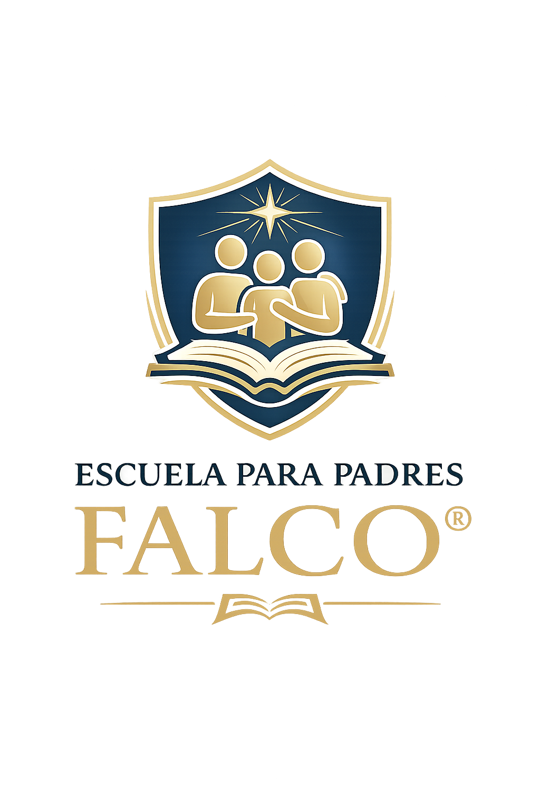

Aprendiendo a ser Padres de un Adolescente®
Aquí encontrarás los materiales y recursos correspondientes a cada encuentro.

El programa se encuentra organizado en ocho encuentros asincrónicos, diseñados para acompañar a las familias en el desafío de comprender y acompañar la adolescencia desde una mirada práctica y basada en evidencia.
Continuá tu recorrido formativo
Te sugerimos avanzar encuentro por encuentro, completar las actividades propuestas y descargar los materiales correspondientes antes de continuar.
Materiales, libro digital y certificación
En este espacio podrás acceder, cuando se encuentre habilitado, a recursos complementarios de la Escuela para Padres FALCO®, el libro digital, actividades descargables y la certificación del curso.
📘 Libro digital
Acceso al libro Aprendiendo a ser Padres de un Adolescente® en formato digital.
📘 Descargar libro digital📄 Certificación del curso
Descarga de la certificación de participación una vez finalizada la cursada correspondiente.
Disponible al finalizar📝 Material complementario
Guías, actividades prácticas, recursos descargables y ejercicios para acompañar cada módulo.
Acceso habilitado por módulo🎁 Sorteo final
Participación en el sorteo de un ejemplar impreso del libro al finalizar la cursada.
Información disponible al cierrePreguntas frecuentes
¿Debo completar los encuentros en orden?
Se recomienda avanzar de manera progresiva, desde el Encuentro 1 hasta el Encuentro 8, para aprovechar mejor el recorrido formativo.
¿Cómo obtengo mi certificación?
La certificación de participación estará disponible al finalizar la cursada, una vez habilitado el acceso correspondiente.
¿Qué hago si no puedo descargar un archivo?
Podés comunicarte con la coordinación de la Escuela para Padres FALCO® por WhatsApp para recibir asistencia.
¿Este curso reemplaza una consulta psicológica?
No. El curso tiene fines formativos y psicoeducativos. No reemplaza procesos psicoterapéuticos ni atención psicológica individual.
“Acompañar a un adolescente no significa tener todas las respuestas, sino estar disponible para construir juntos nuevos caminos.”
Escuela para Padres FALCO®Encuesta de satisfacción y certificación
Al completar los ocho encuentros del programa se habilitará automáticamente el acceso a la encuesta final de satisfacción y a la descarga de la certificación de participación.
Continuá avanzando encuentro por encuentro para completar tu recorrido formativo.
🔒 Disponible al finalizar el programa¿Tenés alguna consulta?
Podés comunicarte con la coordinación de la Escuela para Padres FALCO® por dudas relacionadas con los contenidos, materiales o actividades del programa.
Las consultas serán respondidas dentro de las 48 horas hábiles.
Este espacio no reemplaza procesos psicoterapéuticos ni constituye atención psicológica individual.
💬 Realizar una consulta